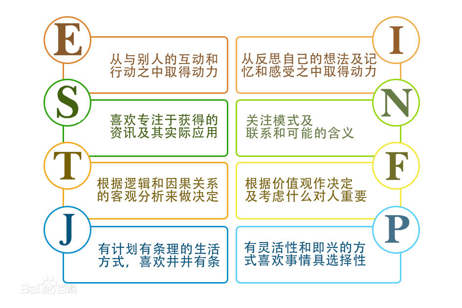

MBTI十六型人格
MBTI全称Myers-Briggs Type Indicator，是一种迫选型、自我报告式的性格评估工具，用以衡量和描述人们在获取信息、作出决策、对待生活等方面的心理活动规律和性格类型。它以瑞士心理学家Carl Jung的性格理论为基础，由美国的Katherine C Briggs和Isabel Briggs Myers母女共同研制开发。该指标以瑞士心理学家荣格划分的8种类型为基础，经过二十多年的研究后，编制成了《迈尔斯-布里格斯类型指标》，从而把荣格的类型理论付诸实践。迈尔斯在荣格的优势功能和劣势功能、主导功能和从属功能等概念的基础上，进一步提出功能等级等概念，并有效的为每一种类型确定了其功能等级的次序，又提出了类型的终生发展理论，形成四个维度。约翰.毕比博士在《类型与原型》中，将心理类型理论和原型理论系统地结合在一起。华南师范大学申荷永教授将心理类型引进了中国并加以扩展这四个维度就是四把标尺，每个人的性格都会落在标尺的某个点上，这个点靠近哪个端点，就意味着这个人就有哪方面的偏好。 MBTI是当今世界上应用最广泛的性格测试工具。它已经被翻译成近20种世界主要语言，每年的使用者多达200多万，其中不乏世界500强之内的大型企业。
心理学认为，“性格”是一种个体内部的行为倾向，它具有整体性、结构性、持久稳定性等特点，是每个人特有的，可以对个人外显的行为、态度提供统一的、内在的解释。MBTI把人的性格分为十六种类型，由四个维度上的不同偏好构成：
第一部分：我们与外界相互作用的程度以及自己的能量被引向何处
外向型（Extravert）关注自己如何影响外部环境：将心理能量和注意力聚集于外部世界和与他人的交往上。例如：聚会/评论/聊天。
内向型（Introvert）关注外部环境的变化对自己的影响：将心理能量和注意力聚集于内部世界，注重自己的内心体验。例如：独立思考，看书，避免成为注意的中心，听得比说的多。
第二部分：我们自然注意到的信息类型
感觉型（Sensing）关注由感觉器官获取的具体信息：看到的、听到的、闻到的、尝到的、触摸到的事物。例如：关注细节、喜欢描述、喜欢使用和琢磨已知的技能。
直觉型（iNtuition）关注事物的整体和发展变化趋势：灵感、预测、暗示，重视推理。例如：重视想象力和独创力，喜欢学习新技能、但容易厌倦，喜欢使用比喻，跳跃性地展现事实。

第三部分：我们做决定和得出结论的方法
思考型（Thinking）重视事物之间的逻辑关系，喜欢通过客观分析作决定评价。例如：理智、客观、公正。
情感型（Feeling）以自己和他人的感受为重，将价值观作为判定标准。例如：对行为对他人情感的影响敏感，认为圆通和坦率同样重要。
第四部分：我们喜欢以一种较固定的方式生活（或做决定），还是以一种更自然的方式生活（或获取信息）
判断型（Judging）喜欢做计划和决定，愿意进行管理和控制，希望生活井然有序。例如：重视结果（重点在于完成任务）、按部就班、有条理、尊重时间期限、喜欢做决定。
感知型（Perceiving）灵活、试图去理解、适应环境、倾向于留有余地，任事情自由发展。例如：重视过程、随信息的变化不断调整目标。